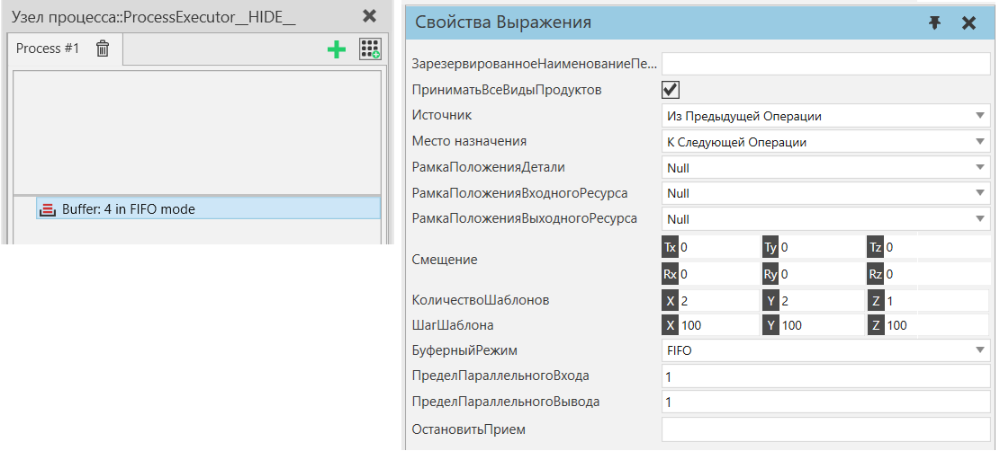

|
Оператор Буфер позволяет создать временное хранилище для продуктов в виде сетки. Несколько продуктов могут входить и выходить из буфера параллельно. Транспортировка продуктов обрабатывается аналогично отчетам о транспортировке.
Оператор продолжает выполнение до тех пор, пока не будет выполнено условие прерывания и буфер не опустеет.

Свойства
Название
|
Описание
|
ЗарезервированноеНаименованиеПеременнойДетали
|
Переменная, содержащая детали, уже зарезервированные с помощью заявления о резервировании деталей. Буфер будет сначала заполнен этими деталями, а затем продолжит получать другие детали, как определено свойством Источник.
Примечание: Фильтрация продуктов, определяемая свойствами ПриниматьВсеВидыДеталей, ПринятГруппыПроцессов и ПринятыеВидыДеталей, не применяется к предварительно зарезервированным деталям.
|
ПриниматьВсеВидыДеталей
|
Если выбрано, принимается любая деталь.
|
ПринятыеГруппыПроцессов
|
Разрешает только выбранные группы потоков.
|
ПринятыеВидыДеталей
|
Разрешает только выбранные типы деталей.
|
Источник
|
Определяет, какой источник используется для транспортировки детали.
Из Предыдущей Операции - Продукт, соответствующий фильтру продуктов, сначала резервируется, а затем переносится с помощью транспортного ресурса.
Из Контейнера Компонентов - Ожидает прибытия продукта, соответствующего фильтру продуктов, из контейнера компонента, подключенного к транспортному узлу. Как правило, в случае процесса когда продукт поступает в контейнер компонента по конвейерному пути.
Этот режим, так же, необходимо использовать для получения продуктов, отправленных из какого-либо другого процесса, с применением свойства МестоНазначения в режиме К Транспортному Узлу.
|
Место назначения
|
Определяет пункт назначения, куда вывозится продукт.
К Следующей Операции - Продукт транспортируется к следующему процессу с помощью транспортной системы. Транспортировка осуществляется по принципу вытягивания, что означает, что следующий процесс запрашивает продукт, когда у него есть емкость.
К Контейнеру Компонентов - Продукт помещается в контейнер компонента, определенный в КонтейнерМестаНазначения. Если КонтейнерМестаНазначения имеет выходной порт, связанный с поведением другого контейнера, продукт проходит через КонтейнерМестаНазначения в подключенный к нему контейнер. Транспортировка осуществляется толкающим способом, что означает, что продукт вывозится, как только в контейнере назначения появляется свободное место. Как правило, это используется в поточном процессе для размещения продуктов на конвейере.
К Транспортному Узлу - Продукт транспортируется к определенному транспортному узлу с помощью транспортной системы. В этом режиме можно использовать транспортную систему в режиме проталкивания, что означает, что продукты транспортируются к целевому узлу, используя конвейер в качестве буфера.
|
КонтейнерМестаНазначения
|
Контейнер компонента, выходное соединение которого используется для размещения исходящих продуктов в режиме контейнера.
|
РамкаПоложенияДелали
|
Расположение Системы координат, где размещаются продукты.
|
РамкаПоложенияВходногоРесурса
|
Определяет смещение положения ресурса от положения продукта и плоскости XY, на которую проецируется положение ресурса при заполнении буфера.
|
РамкаПоложенияВыходногоРесурса
|
Определяет смещение позиции ресурса от позиции продукта и плоскости XY, на которую проецируется позиция ресурса при очистке буфера.
|
Смещение
|
Смещение первого продукта от Системы координат позиции продукта
|
КоличествоШаблонов
|
Количество продуктов по осям X, Y, Z
|
ШагШаблона
|
Шаг между продуктами в шаблоне по осям X, Y, Z
|
БуферныйРежим
|
Определяет порядок доступа продукта к буферу.
В порядке поступления (FIFO) - Первый поступивший экземпляр выводится первым.
Последний пришел — первый ушел (LIFO) - Последний введенный экземпляр транспортируется первым.
|
ПределПарралельногоВхода
|
Определяет, сколько продуктов может заполнить буфер параллельно
|
ПределПарралельногоВывода
|
Определяет, сколько продуктов может покинуть буфер параллельно
|
ОстановитьПрием
|
Когда оценивается как True, буфер перестает принимать продукты и опустошается.
|
|